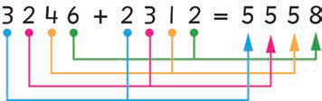

Add the digits from right to left.
Steps
- 1.Add the ones and write the answer in the ones place.
- 2.Add the tens and write the answer in the tens place.
- 3.Add the hundreds and write the answer in the hundreds place.
- 4.Add the thousands and write the answer in the thousands place.

Therefore, 3246 + 2312 = 5558.
Example 2
68942 + 30051 =
Solution
Add the digits from right to left.
Steps
- 1.Add the ones: 2 + 1 = 3. Write 3 in the ones place.
- 2.Add the tens: 4 + 5 = 9. Write 9 in the tens place.
- 3.Add the hundreds: 9 + 0 = 9. Write 9 in the hundreds place.
- 4.Add the thousands: 8 + 0 = 8. Write 8 in the thousands place.
- 5.Add the ten thousands: 6 + 3 = 9. Write 9 in the ten thousands place.